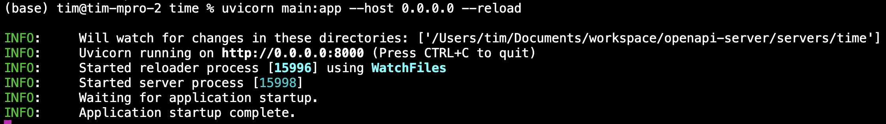
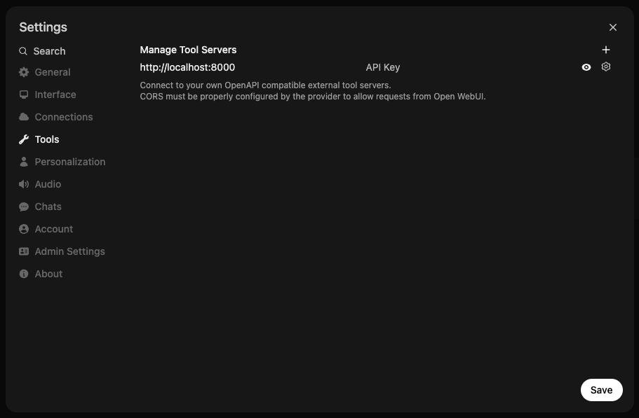
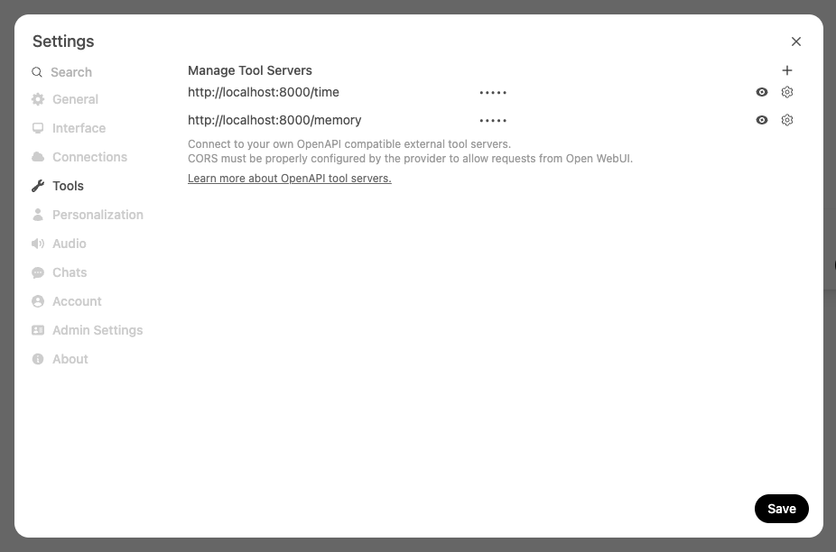
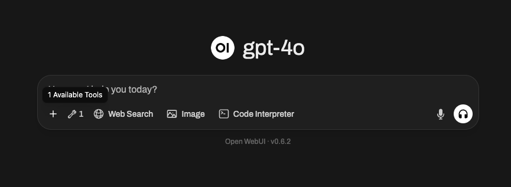
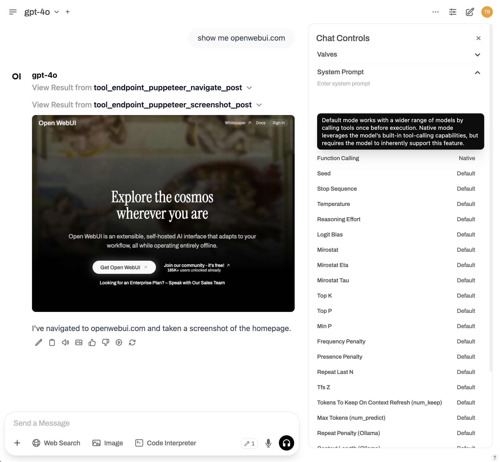

🔗 Open WebUI Integration
Overview
Open WebUI v0.6+ supports seamless integration with external tools via the OpenAPI servers — meaning you can easily extend your LLM workflows using custom or community-powered tool servers 🧰.
In this guide, you'll learn how to launch an OpenAPI-compatible tool server and connect it to Open WebUI through the intuitive user interface. Let’s get started! 🚀
Step 1: Launch an OpenAPI Tool Server
To begin, you'll need to start one of the reference tool servers available in the openapi-servers repo. For quick testing, we’ll use the time tool server as an example.
🛠️ Example: Starting the time server locally
git clone https://github.com/open-webui/openapi-servers
cd openapi-servers
# Navigate to the time server
cd servers/time
# Install required dependencies
pip install -r requirements.txt
# Start the server
uvicorn main:app --host 0.0.0.0 --reload
Once running, this will host a local OpenAPI server at http://localhost:8000, which you can point Open WebUI to.

Step 2: Connect Tool Server in Open WebUI
Next, connect your running tool server to Open WebUI:
- Open WebUI in your browser.
- Open ⚙️ Settings.
- Click on ➕ Tools to add a new tool server.
- Enter the URL where your OpenAPI tool server is running (e.g., http://localhost:8000).
- Click "Save".

🧑💻 User Tool Servers vs. 🛠️ Global Tool Servers
There are two ways to register tool servers in Open WebUI:
1. User Tool Servers (added via regular Settings)
- Only accessible to the user who registered the tool server.
- The connection is made directly from the browser (client-side) by the user.
- Perfect for personal workflows or when testing custom/local tools.
2. Global Tool Servers (added via Admin Settings)
Admins can manage shared tool servers available to all or selected users across the entire deployment:
- Go to 🛠️ Admin Settings > Tools.
- Add the tool server URL just as you would in user settings.
- These tools are treated similarly to Open WebUI’s built-in tools.
Main Difference: Where Are Requests Made From?
The primary distinction between User Tool Servers and Global Tool Servers is where the API connection and requests are actually made:
-
User Tool Servers
- Requests to the tool server are performed directly from your browser (the client).
- This means you can safely connect to localhost URLs (like
http://localhost:8000)—even exposing private or development-only endpoints such as your local filesystem or dev tools—without risking exposure to the wider internet or other users. - Your connection is isolated; only your browser can access that tool server.
-
Global Tool Servers
- Requests are sent from the Open WebUI backend/server (not your browser).
- The backend must be able to reach the tool server URL you specify—so
localhostmeans the backend server's localhost, not your computer's. - Use this for sharing tools with other users across the deployment, but be mindful: since the backend makes the requests, you cannot access your personal local resources (like your own filesystem) through this method.
- Think security! Only expose remote/global endpoints that are safe and meant to be accessed by multiple users.
Summary Table:
| Tool Server Type | Request Origin | Use Localhost? | Use Case Example |
|---|---|---|---|
| User Tool Server | User's Browser (Client-side) | Yes (private to you) | Personal tools, local dev/testing |
| Global Tool Server | Open WebUI Backend (Server-side) | No (unless running on the backend itself) | Team/shared tools, enterprise integrations |
User Tool Servers are best for personal or experimental tools, especially those running on your own machine, while Global Tool Servers are ideal for production or shared environments where everyone needs access to the same tools.
👉 Optional: Using a Config File with mcpo
If you're running multiple tools through mcpo using a config file, take note:
🧩 Each tool is mounted under its own unique path!
For example, if you’re using memory and time tools simultaneously through mcpo, they’ll each be available at a distinct route:
This means:
- When connecting a tool in Open WebUI, you must enter the full route to that specific tool — do NOT enter just the root URL (http://localhost:8000).
- Add each tool individually in Open WebUI Settings using their respective subpath URLs.

✅ Good:
http://localhost:8000/time http://localhost:8000/memory
🚫 Not valid:
This ensures Open WebUI recognizes and communicates with each tool server correctly.
Step 3: Confirm Your Tool Server Is Connected ✅
Once your tool server is successfully connected, Open WebUI will display a 👇 tool server indicator directly in the message input area:
📍 You'll now see this icon below the input box:

Clicking this icon opens a popup where you can:
- View connected tool server information
- See which tools are available and which server they're provided by
- Debug or disconnect any tool if needed
🔍 Here’s what the tool information modal looks like:

🛠️ Global Tool Servers Look Different — And Are Hidden by Default!
If you've connected a Global Tool Server (i.e., one that’s admin-configured), it will not appear automatically in the input area like user tool servers do.
Instead:
- Global tools are hidden by default and must be explicitly activated per user.
- To enable them, you'll need to click on the ➕ button in the message input area (bottom left of the chat box), and manually toggle on the specific global tool(s) you want to use.
Here’s what that looks like:

⚠️ Important Notes for Global Tool Servers:
- They will not show up in the tool indicator popup until enabled from the ➕ menu.
- Each global tool must be individually toggled on to become active inside your current chat.
- Once toggled on, they function the same way as user tools.
- Admins can control access to global tools via role-based permissions.
This is ideal for team setups or shared environments, where commonly-used tools (e.g., document search, memory, or web lookup) should be centrally accessible by multiple users.
(Optional) Step 4: Use "Native" Function Calling (ReACT-style) Tool Use 🧠
For this to work effectively, your selected model must support native tool calling. Some local models claim support but often produce poor results. We strongly recommend using GPT-4o or another OpenAI model that supports function calling natively for the best experience.
Want to enable ReACT-style (Reasoning + Acting) native function calls directly inside your conversations? You can switch Open WebUI to use native function calling.
✳️ How to enable native function calling:
- Open the chat window.
- Go to ⚙️ Chat Controls > Advanced Params.
- Change the Function Calling parameter from
DefaulttoNative.

Need More Tools? Explore & Expand! 🧱
The openapi-servers repo includes a variety of useful reference servers:
- 📂 Filesystem access
- 🧠 Memory & knowledge graphs
- 🗃️ Git repo browsing
- 🌎 Web search (WIP)
- 🛢️ Database querying (WIP)
You can run any of these in the same way and connect them to Open WebUI by repeating the steps above.
Troubleshooting & Tips ��🧩
- ❌ Not connecting? Make sure the URL is correct and accessible from the browser used to run Open WebUI.
- 🔒 If you're using remote servers, check firewalls and HTTPS configs!
- 📝 To make servers persist, consider deploying them in Docker or with system services.
Need help? Visit the 👉 Discussions page or open an issue.